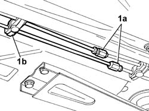
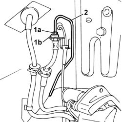

3340B75 Rigid pipes from connectors to rear brakes - R.R. with reservoir removed
- Path
- Procedures > 33 BRAKES > 3340 ANTI-LOCK BRAKING SYSTEM (A.B.S.) > 3340B ABS SYSTEM PIPES > 3340B75 Rigid pipes from connectors to rear brakes - R.R. with reservoir removed
- Kind
- repair procedure (removal / refitting; the operation number is the code)
- Applies to
- all engines; all production periods
- Interactive page
- https://sloeber94.github.io/elrnDB-lThss/en/#/155795
Applies to: all engines; all production periods
 Removing
Removing
 Refitting
Refitting1. Undo the connectors (1a) joining the front sections to the rear sections and also remove the fastening bands (1b).

Applies to: all engines; all production periods
1. Undo the connector joining the rigid section to the flexible section of the right rear brake pipe.
- Repeat this operation on the left brake caliper pipe.
2. Remove the rigid pipe assemblies.

Applies to: all engines; all production periods
Refitting
Removing- Fit the two rigid pipes to the rear brakes and tighten the connectors for the flexible sections to the brake calipers.
 | Value - daNm | Fastening | Component | Ø |
|---|---|---|---|---|
. | 1.4 | Connector | BRAKING SYSTEM PIPE BRAKES | M10 |
- Connect the two pipes to the connectors.
- Secure the two rigid pipes to the bodyshell using the plastic retaining bands.